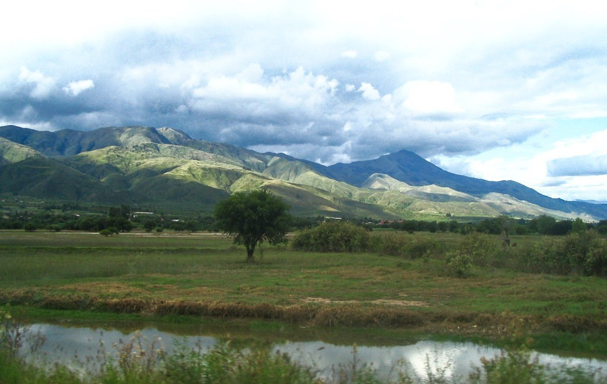

Valle Alto

Cochabamba, a lo largo del tiempo, se ha consolidado como uno de los departamentos de Bolivia más visitados durante todo el año; gracias a los innumerables encantos turísticos que aún permanecen vigentes en el territorio. Desde que llega, el visitante es recibido con la amplia diversidad de comida qhochala, no por nada el departamento es conocido como la capital gastronómica de Bolivia. Además de conocer la Plaza Principal de Cochabamba, el Cristo de la Concordia y El Pueblito, existen diferentes lugares más alejados que esperan con los brazos abiertos a los turistas. El año pasado, la Gobernación Departamental de Cochabamba realizó la primera versión de festejos en conmemoración al Día Mundial del Turismo con un tour por Villa Tunari en el Chapare. En aquella oportunidad, los asistentes pudieron pasar un fin de semana ameno, disfrutando lo que ofrece el lugar. Este año, intenta potenciar otros sectores del departamento. Organizó un tour enfocado en la visita a los espacios más representativos del Valle Alto, que se realiza hoy, domingo. Según explica Saúl Cuellar, técnico de Turismo de la Gobernación, el paseo recorre los municipios de Arbieto, Tolata y Tarata. El punto de partida de este recorrido es la represa de la Angostura, donde se concentran los buses gratuitos puestos a disposición de las personas desde las 09:00. DIVERSIÓN FAMILIAR A 18 kilómetros del centro de la ciudad se encuentra la represa de la Angostura, una laguna artificial construida con el objetivo de proveer agua de riego para los lugareños. Con el tiempo se constituyó en un atractivo turístico bastante visitado. Como inicio del circuito de este tour, los restaurantes asentados a la orilla de la represa son los principales anfitriones que ofrecerán diferentes variedades de pescado como pacú, pejerrey y sardinas, preparados a la parrilla, horno y plancha. Si se trata de diversión en familia, este es el lugar ideal gracias a los juegos náuticos puestos al servicio de los turistas. Entre los más importantes destacan: lanchas, motos acuáticas, botes, bananas, yates, inflables y rollers. Y, para disfrutar con tranquilidad todo el recorrido, los visitantes podrán hospedarse en las cabañas y hoteles del lugar. Hoy, en ese sector, se realizará la elección de Miss y Mister Turismo 2018, y, para finalizar el evento, varios grupos musicales amenizarán el escenario central. TRADICIONES ANCESTRALES Hace 24 años, cada último domingo del mes de julio en la localidad de Achamoco, municipio de Arbieto, se realiza la conocida feria de la Ñawpa Manka Mikhuna, un referente de las tradiciones de antaño. Con grandes monumentos históricos, juegos como el trompo, rayuela en adobe, tawasara, chuis, cachinas y platos a base de cereales, semillas y chuño, reciben a todos los visitantes para que puedan empaparse más de las costumbres vallunas. “Para esta ocasión hemos preparado diferentes platos como el pejtu de habas, el phiri que podrán acompañar con los diferentes atractivos que tenemos en el lugar”, señala Marcelo García Torrez, responsable de Cultura y Turismo de Arbieto. NATURALEZA Y BUEN SABOR “La historia cuenta que en la estación del tren de Caluyo había una señora que llevaba chanka de pollo en un bañador, para servir a los que llegaban. Ese fue el origen de uno de los platos más tradicionales de Tolata”, narra Milton Sejas, representante de la Asociación de Pejerrey y Carpa de Villa Copacabana. Ubicado en el kilómetro 33 de la carretera al Valle Alto se encuentra el municipio de Tolata, reconocido por ofrecer una diversidad de pescados en diferentes presentaciones, además de navegación náutica. “Lo mejor de esto es tener contacto con la naturaleza y disfrutar en familia de todos los atractivos que ofrecemos”, afirma Katherine Jiménez, responsable de Turismo de Tolata. HISTORIA PATRIMONIAL Conocido por su delicioso plato de chorizo y su fiel estilo colonial plasmado en paredes, calles y casas, la localidad de Tarata es parte del circuito turístico organizado por la Gobernación. Desde que llega al lugar, el visitante respira historia patrimonial en cada una de las edificaciones que embellecen el pueblo. Una de ellas es la Torre del Mirador, un ícono tarateño apto para aquellos que no sufran de vértigo. “Es la edificación más alta del lugar, por eso, no puede subir alguien que tenga miedo a las alturas, claro que, cuando se llega a la cima la vista es espectacular”, asegura Mario Gonzáles, responsable de Cultura y Turismo de Tarata. En la misma torre se encuentra un reloj a cuerda de 1902, traído especialmente desde Alemania; el mismo sigue funcionando hasta hoy. Algo peculiar del municipio de Tarata es la división de los barrios de acuerdo al oficio de cada habitante, por ejemplo existen zonas específicas de tejedores, músicos, chicheros, zapateros, etc. Dentro de Tarata está el pueblo de Huayculi, conocido por su hábil trabajo en cuanto a alfarería se refiere. En esta ocasión, los expertos brindarán talleres artesanales sobre su labor. Entre los atractivos del lugar también se puede encontrar la Casa de la Cultura que alberga un museo paleontológico, una construcción que data del siglo XVIII. Ahí mismo se puede apreciar una fuente que estaba emplazada en el centro del pueblo y, debido a los detrozos frecuentes que sufría, fue trasladada al lugar. Durante la restauración del museo se cuido hasta el mínimo detalle arquitectónico, por ello, el techo se mantuvo con cañahueca y el entorchado con nudos con cuero de res como era originalmente. Además, se usaron tejas musleras, moldeadas en las piernas de mujeres, como se hacía en la antigüedad. INCENTIVO AL TURISMO Como parte del trabajo de impulsar el turismo en este sector del departamento, la Gobernación en consenso con todos los participantes del evento determinaron ofrecer todos los platos de comida, los juegos náuticos y las guías por lugares históricos a un precio de dos por uno, con el objetivo de lograr una mayor afluencia de personas. Tarata, sin duda se caracteriza por haber realizado importantes aportes al país, uno de ellos en la música, prueba de ello se encuentra un piano de 1862 con el que se hace conciertos una vez al mes. En el mismo lugar también está el primer mapa de Bolivia que fue hecho durante el gobierno de José María Linares en 1859. Son innumerables los atractivos de este histórico municipio, partícipe del tour.